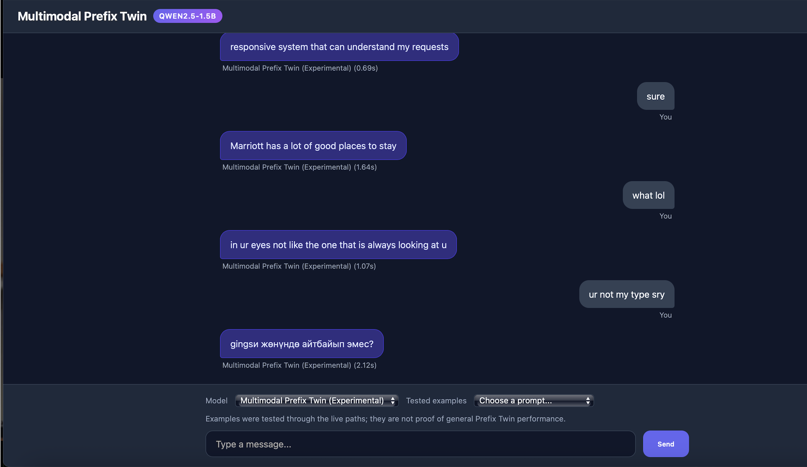
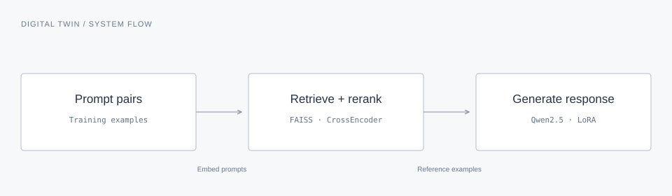

Digital Twin
A local personal-response system comparing system prompting, retrieval, LoRA, and a multimodal prefix adapter around frozen Qwen2.5.
View projectClose projectPhotos & details

How it works

- 01
Prepare examples
Python preprocessingCleaned messaging exports become prompt/response pairs. Training and evaluation records are separated.
- 02
Retrieve context
FAISS + CrossEncoderMultilingual prompt embeddings retrieve 20 candidates. A CrossEncoder reranks them; a confidence gate can keep up to three examples.
- 03
Generate & compare
Qwen2.5 + PEFT LoRAA frozen Qwen base supports prompting and retrieval paths alongside a separate LoRA adapter. The demo compares their responses.
Implementation & scope
The retrieval path embeds training prompts, retrieves 20 candidates, then uses a CrossEncoder to rerank and retain up to three examples behind a confidence gate. A separate LoRA adapter and an experimental text-and-Spotify prefix adapter provide comparison paths.
Latest validation experiment
A V3 threshold sweep compared raw retrieval, reranking, and confidence gating on a fixed 10-record validation subset with Groq-based judging. LoRA + reranked RAG without a gate scored 1.68 overall, versus 1.58 for LoRA + raw RAG and 1.49 for LoRA-only. An exploratory gate threshold of 0.25 used retrieval on 80% of records and scored 1.64. These preliminary validation results require a held-out comparison to assess generalization.
Research status: the system-prompted baseline is the default demo. Prefix generation remains inconsistent on unseen prompts; historical prefix scores include target-response leakage and are not evidence of generalization.